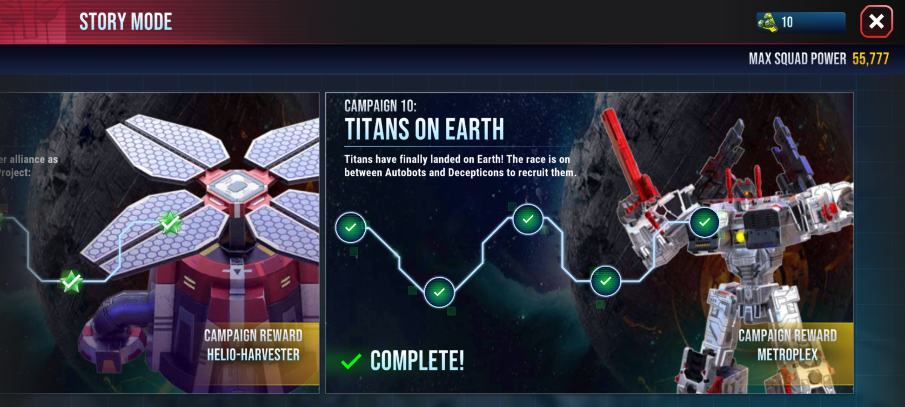
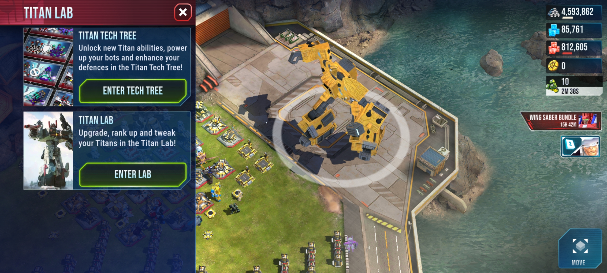
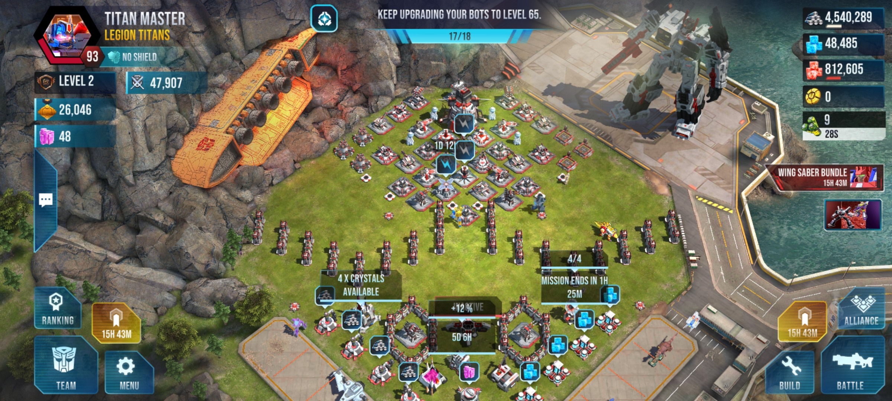

Титаны — огромные трансформеры, трансформирующиеся в целые города крепости, способны свободно перемещаться в космосе и перестраивать свое тело.
Титаны в игре Трансформеры: земные войны очень полезные, они помагают тебе уничтожать вражескую базу и они же стоят на страже твоей базы.
Если ты нападаешь вместе со своим титаном на игрока у которого тоже есть свой титан, то они вступают в схватку между собой. После победы одного из титанов, он начинает уничтожать своих врагов.
Чтобы получить личного титана себе на базу, нужно пройти компанию - Титаны на земле, которая открывается при достижении 17 уровня штаба.
После прохождения компании вы получаете "Лабораторию титанов" и Метроплекса 2 звезды
Для получения других титанов 2-4 звезды нужно:
| Титаны | 2 звезды | 3 звезды | 4 звезды |
|---|---|---|---|
| Метроплекс | Компания | 20к 3 звезды осколков | 30к 4 звезды осколков |
| Фортресc Максимус | 10к 3 звезды осколков | 30к 3 звезды осколков | 40к 4 звезды осколков |
| Арк | 10к 3 звезды осколков | 30к 3 звезды осколков | 40к 4 звезды осколков |
Вот альт-формы всех титанов:


Титаны имеют разные способности:

Они делятся на 3 типа:
Вот самый лучший выбор способностей у каждого титана:
Для улучшения титана нужна специальная искра титанов, у каждого титана она своя, она добывается в штурме титанов

Технодрево - это очень важная часть титана, улучша это технодрево - увеличивается сила обороны, ботов, титанов и гештальтов.
Технодрево делится на 3 ветки:
Ветка атаки

Ветка защиты

Ветка титанов

Ну и напоследок я вам расскажу еще кое-что. Если у вас вся оборона максимального уровня - то за счет титана который стоит у вас на базе, будет зависить цвет базы:
